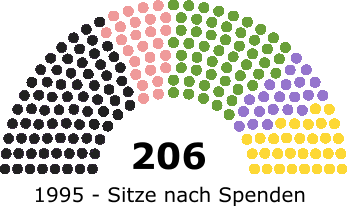
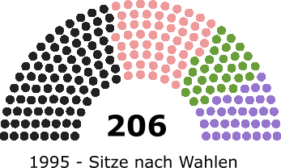
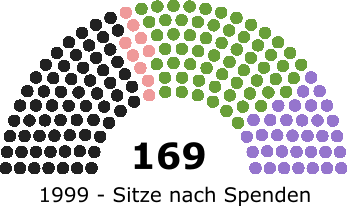
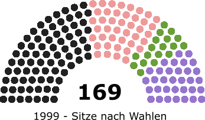
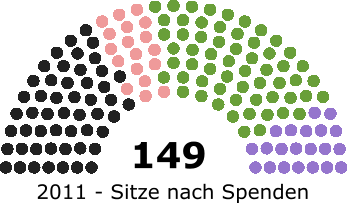
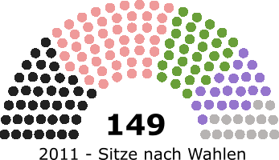

Größte Einzelspende
Unternehmer Klaus Krone 309.043,59€ an die CDU
Höchste Einzelspenden Unternehmen
184.000,00€ an die CDU YOC AG (Mobile Advertising)
Durchschnittliche Spendenhöhe
18.654,84 € (Median: 13.579,00€)
höchste Spendenanzahl
16 Einzelspenden
Franz Schulz
ehemalige Bezirksbürgermeister
Friedrichshain - Kreuzberg
Spendenhäufigkeit
Alle 9 Tage
Privat vs. Unternehmen
Privatpersonen spenden zusammengerechnet mehr
aber der durchschnittliche Spendenbetrag bei Unternehmen ist höher
Bekannte Spender
Angela Merkel • Franz Müntefering • Dr. Guido Westerwelle • Dr. Frank-Walter Steinmeier • Gregor Gysi • Klaus Wowereit • Claudia Roth • Jürgen Trittin • Sahra Wagenknecht
- 
- 
- 
- 
- 
- 